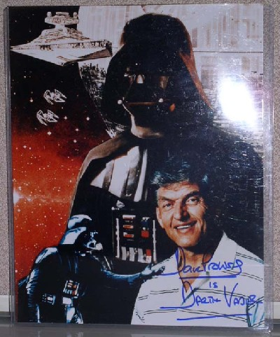

The next item up for bids in our eBay auction benefiting the Starlight Starbright Children's Foundation is a set of three autographed photos that should help bring out your dark side. I will find any lack of enthusiasm about this lot to be quite disturbing.
If the force choke is your thing, then this is your auction item. You will be bidding on an impressive trio of officers who were at the heart of the Galactic Empire.

- David Prowse: Darth Vader himself. The photo is of Prowse in front of various scenes of Darth Vader, the Death Star, a Star Destroyer, and Imperial Tie interceptors and is signed "David Prowse is Darth Vader". It comes in a hard plastic case.

- Richard LeParmentier: Admiral Motti, who underestimated the power of the force and was choked by Vader in Star Wars: A New Hope, until Tarkin called Vader off. The photo is a fantastic wide shot of that scene on a white page with a heading on the top that reads "22. INT. DEATH STAR CONFERENCE ROOM" and "VADER – I find your lack of faith disturbing." below the picture. It is signed under the print below the picture and reads "Boy, The Force Works! Richard LeParmentier Admiral Motti." The photo comes in a hard plastic case.
- Michael Sheard: The doomed Admiral Ozzel from The Empire Strikes Back. This photo is from a scene of Admiral Ozzel on his ship and is signed "All the Best! Michael Sheard Admiral Ozzel". It comes with a picture of Mr. Sheard at the time of signing, which you can see at Bart Barenbrug's autograph donation page.
We'll have more autographs and other wizard items coming your way soon. See all of the latest additions to the NYLine auction here, and take a look at the picture gallery of items as well!